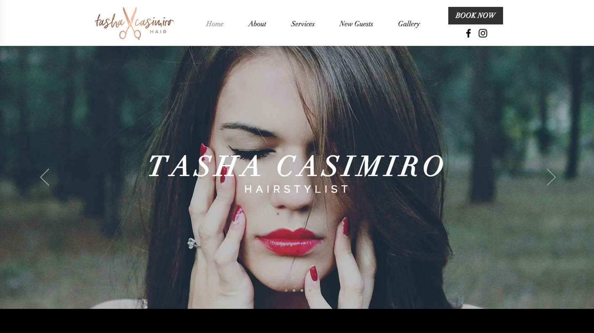

I studied Web Design in high school and continue to design and develop websites under my current employer, Candy V Designs. Below are some websites I've worked on that are currently live.
Web Design
Candy V Designs Re-Design
My boss trusted me with re-designing our company's website, as the old one was slightly outdated. I decided to encorporate more pink into the site as well as larger images, as we finally had profesional photos. The website also features a portfolio collection of the best client-work we've done.
Patch Daily
Patch Daily is a promotional website for their vitamin patch product. On this site, customers can learn more about the patch and also purchase the product as a subscription or one time purchase. The website follows the color scheme of the logo and is very picture-based to keep viewer attention.
Spectrum Technology Solutions
The Spectrum Technology Solutions website is a one page site that follows a blue and green color scheme. The website is split up in different sections to describe what the client offers and why prospective customers should choose them, ending with a contact form to get in touch.
Home Impressions
The client for Home Impressions requested a more modern-looking website that was easier to navigate, as the old site had one large sidebar menu. For this website, we broke up the home page into sections and created a sleek horizontal menu with drop downs to lessen the clutter you see when first opened.

Dragonfly Portrait Design
For Dragonfly Portrait Design, the client requested that the website was very easy to navigate from the home page. As the client asked, we created five different photo-based sections that the user can immediately click on that redirects them to the proper page of the service they are interested in.

Sahara Animal Hospital
Sahara Animal Hospital wanted an updated website that was captivating and easy for viewers to use. We presented the client with different color schemes, and used the final red and orange scheme chosen to determine the design of the website. The website has a clear navigation with no broken links, and now has updated information.
Modelworks AJT
This website was designed to be photo-based, as the client wanted the home page and gallery pages to be a large slideshow. Because the client had so many different projects, a separate page had to be created to avoid having an excessive menu.
Premier Access
Premier Access was created with my past job. For this website I was only involved with the design and not the development. The client requested a website with a more digestible interface with bold text and statistics, so we took the red, white, and blue in their color scheme and paired it with a large font.

Tasha Casimiro Hair
Due to the client's budget, this website was created with Wix. The client considered the most important part of the website to be the services "menu," the gallery, and the ability to book online. Using Square's appointment and bookings feature, the ability to book online was easily integrated.
Back to top